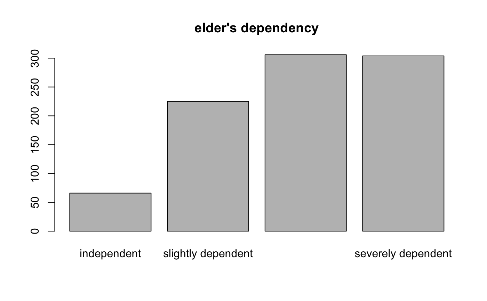

This function returns the variable labels of labelled data.
get_label(x, ..., def.value = NULL, case = NULL)A data frame with variables that have label attributes (e.g.
from an imported SPSS, SAS or STATA data set, via read_spss,
read_sas or read_stata); a variable
(vector) with variable label attribute; or a list of variables
with variable label attributes. See 'Examples'.
Optional, names of variables, where labels should be retrieved.
Required, if either data is a data frame and no vector, or if only
selected variables from x should be used in the function.
Convenient argument to work with pipe-chains (see 'Examples').
Optional, a character string which will be returned as label
if x has no label attribute. By default, NULL is returned.
Desired target case. Labels will automatically converted into the
specified character case. See to_any_case() for
more details on this argument.
A named character vector with all variable labels from the data frame or list;
or a simple character vector (of length 1) with the variable label, if x is a variable.
If x is a single vector and has no label attribute, the value
of def.value will be returned (which is by default NULL).
var_labels is an alternative way to set variable labels,
which follows the philosophy of tidyvers API design (data as first argument,
dots as value pairs indicating variables)
See vignette Labelled Data and the sjlabelled-Package
for more details; set_label to manually set variable labels or get_labels
to get value labels; var_labels to set multiple variable
labels at once.
# import SPSS data set
# mydat <- read_spss("my_spss_data.sav", enc="UTF-8")
# retrieve variable labels
# mydat.var <- get_label(mydat)
# retrieve value labels
# mydat.val <- get_labels(mydat)
data(efc)
# get variable lable
get_label(efc$e42dep)
#> [1] "elder's dependency"
# alternative way
get_label(efc)["e42dep"]
#> e42dep
#> "elder's dependency"
# 'get_label()' also works within pipe-chains
library(magrittr)
efc %>% get_label(e42dep, e16sex)
#> e42dep e16sex
#> "elder's dependency" "elder's gender"
# set default values
get_label(mtcars, mpg, cyl, def.value = "no var labels")
#> mpg cyl
#> "no var labels" "no var labels"
# simple barplot
barplot(table(efc$e42dep))
# get value labels to annotate barplot
barplot(table(efc$e42dep),
names.arg = get_labels(efc$e42dep),
main = get_label(efc$e42dep))

# get labels from multiple variables
get_label(list(efc$e42dep, efc$e16sex, efc$e15relat))
#> [1] "elder's dependency" "elder's gender" "relationship to elder"
# use case conversion for human-readable labels
data(iris)
get_label(iris, def.value = colnames(iris))
#> Sepal.Length Sepal.Width Petal.Length Petal.Width Species
#> "Sepal.Length" "Sepal.Width" "Petal.Length" "Petal.Width" "Species"
get_label(iris, def.value = colnames(iris), case = "parsed")
#> Sepal.Length Sepal.Width Petal.Length Petal.Width Species
#> "Sepal Length" "Sepal Width" "Petal Length" "Petal Width" "Species"